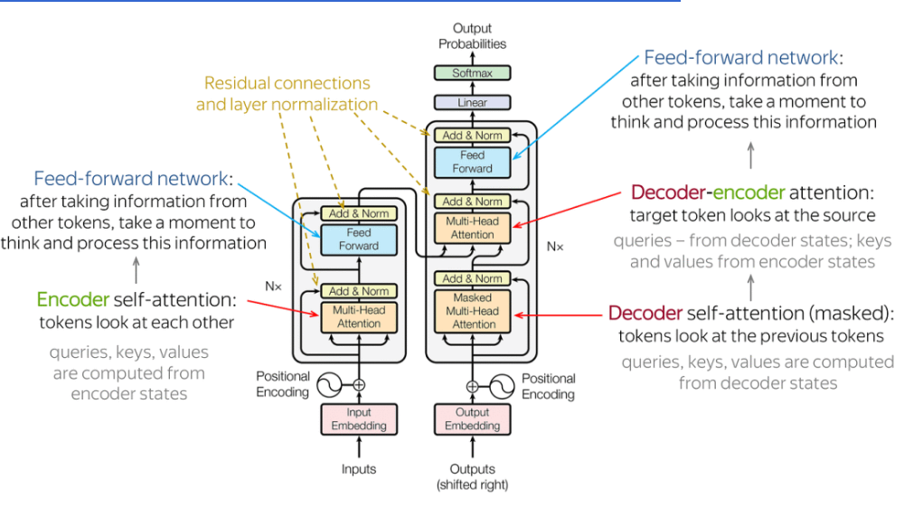

一讀就懂！用大白話講清楚 Transformer 的工作基礎流程

關於 Transformer 相信大家並不陌生，網上文章的相關描述大致如下：
Transformer：一種基於自注意力機制的神經網路結構，通過並行計算和多層特徵抽取，有效解決了長序列依賴問題，實現了在自然語言處理等領域的突破。
Transformer 架構：主要由輸入部分（輸入輸出嵌入與位置編碼）、多層編碼器、多層解碼器以及輸出部分（輸出線性層與 Softmax）四大部分組成。
很顯然上面的解釋，對於初學者是極其不友好的，一看一個不吱聲！我相信 90% 的同學只是想了解 Transformer 工作的基礎流程，而並不想了解其中的實現細節，那麼今天我就用一個生動的實例滿足大家的需求！
我是瀋陽人，我想向外地的老鐵們來介紹一下我的家鄉瀋陽，那麼 Transformer 生成瀋陽介紹的流程大致如下：
整體處理流程
輸入文字 Transformer 內部處理 輸出文字
─────────────────────────────────────────────────────────
"介紹瀋陽" ──→ [ 分詞 ] ──→ [ 嵌入+位置編碼 ]
│
┌─────▼─────┐
│ 編碼器 ×N │ ← 反覆提煉理解
└─────┬─────┘
│
┌─────▼─────┐
│ 解碼器 ×N │ ← 逐字生成
└─────┬─────┘
│
[ Softmax ]
│
▼
"瀋陽是遼寧省的省會..."
首先把 Transformer 想像成一間智能廚房
- 廚師（AI 模型）看過無數本菜譜（訓練資料）
- 廚房裡有一群配合默契的幫廚（多頭注意力機制）
- 每個幫廚都盯著所有食材（輸入文字），但各自關注不同部分
然後要做「瀋陽介紹」這道菜時，按照下面的步驟進行
1. 理解訂單
拆解「瀋陽」、「家鄉」、「介紹」等關鍵詞。
2. 食材準備
從記憶庫調取相關資訊：
- 歷史：清朝發祥地、故宮
- 地標：彩電塔、中街
- 美食：老邊餃子、雞架
- 季節：四季分明
3. 分層加工
- 第一層幫廚：把「故宮」和「北京故宮」對比
- 第二層幫廚：把「雞架」和城市夜生活關聯
- 第三層幫廚：串聯工業歷史和現代轉型
4. 擺盤上菜
按照「總-分-總」結構：
- 開頭點題 → 分段詳述 → 抒情結尾
廚房比喻 vs 技術術語對照表
| 廚房比喻 | Transformer 術語 | 簡單解釋 |
|---|---|---|
| 菜譜 | 訓練資料 | 模型學過的大量文本 |
| 食材切塊 | Token 分詞 | 把句子拆成小單位 |
| 食材編號 | 嵌入 (Embedding) | 把文字轉成數字向量 |
| 座位號碼 | 位置編碼 | 讓模型知道詞的前後順序 |
| 幫廚團隊 | 多頭注意力 | 多個角度同時分析關聯 |
| 分層加工 | 編碼器堆疊 | 逐層提煉更深的理解 |
| 擺盤上菜 | 解碼器輸出 | 一個字一個字生成結果 |
編碼器 vs 解碼器的角色區分
Transformer 內部其實有兩個不同角色：
- 編碼器 (Encoder)：負責「讀懂」輸入 — 像是讀題目的考生，反覆咀嚼題意
- 解碼器 (Decoder)：負責「寫出」答案 — 像是動筆作答，邊寫邊回頭看題目
- GPT 系列只用解碼器，BERT 只用編碼器，原始 Transformer 兩個都用
補充一些特殊能力
- 同時看全桌調料（並行處理）：不用像老式 RNN 那樣一個個字處理
- 自動加重點（自注意力）：說到「老四季抻麵」時，自動關聯雞架文化
- 防跑題機制（位置編碼）：確保先說地理位置再說歷史，順序合理
逐字生成：一個字一個字往外蹦
Transformer 不是一次生出整段文字，而是一個字一個字產生的：
就像廚師不是一次端出整桌菜，而是一道一道上：先生成「瀋」，根據「瀋」生成「陽」，再根據「瀋陽」生成「是」… 每個字都參考前面所有已生成的字來決定下一個字。
實際生成流程
實際生成時，就像有個看不見的瀋陽導遊在你大腦裡：
- 先畫思維導圖（生成大綱）
- 給每個景點配小故事（細節填充）
- 最後用「歡迎來瀋陽」收尾（情感昇華）
整個過程比人寫作文快 n 倍，但會偶爾出現「瀋陽靠海」這種錯誤（因為學習資料有雜訊），這正是人類需要校對的原因。